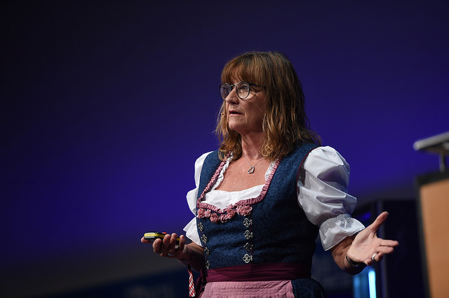

Bits&Pretzels 2017
What is Bits&Pretzels?
Bits&Pretzels is a three-day conference for founders and people from the start-up ecosystem. It takes place in the period of the “Oktoberfest” in Munich. National and international founders and investors share their insights. In 2017 around 5000 founders, investors and startup enthusiasts attended the conference.
I was one of the 110 volunteers at the conference. In this post I want to share some of my impressions and also help you to get a feeling whether the conference is a good fit for you or not.
Here is the highlight video of 2017:
Hosts
Bernd Storm van’s Gravesande (left): PhD in Management, founder of Aboalarm
Andreas Bruckschlögl (center): founder of Ryte
Felix Haas (right): B.Sc. and M.Sc from TU Munich (EE), founder of Amiando
Venue
The first two days takes place at the International Congress Center of the Messe München and the last day at the “Oktoberfest”.
During the conference there is a exhibition with lots of startups. They are clustered in several categories as shown in the picture below. I think the startups had to pay for a booth. Is a booth worth it? I think it depends on your product. If your product is too complicated to understand in a couple of seconds or too niche than you will have a hard time. Inveestors won’t just roam around to find you because they will already have setup meetings for most of the day.
Timetable & Stages
Many talks/discussions take place simultaneously at different stages. So make sure to make a plan of what you want to see beforehand. Fortunately most of the talks are recorded and uploaded afterwards on their youtube channel.
Stages
There are several stages with different focuses.
- Academy Stage: how tos
- Investor Stage: startup and VC presentations
- Bits Stage: IT talks
- Pretzels Stage: pitches & founder stories
- Coperate Innovation Stage: bridge between startups and big corporations
- Center Stage: keynotes
My shifts were mostly at the Pretzels Stage and Bits Stage (no recordings). In my free time I spent of the time at the Academy Stage.
Talk reviews
How to build global champions? (Marc Samwer)
Marc Samwer is the co-founder of Rocket Internet. I really liked his talk. It was full of useful information. He skipped the fluff/motivational stuff and went straight to concrete strategies. You could feel that he wanted to pack as much information in his talk as possible.
After the conference when he was waiting outside the venue, he explained what he had to leave out of his talk due to limited time. Great guy who you definitely don’t want to have as your competitor.

How to do PR? (Andy Cunningham)
Andy Cunningham worked together with Steve Jobs during the launch of the Macintosh. I think she did a good job and shared some great insights about her work with Steve Jobs. You can check out her new book which came out right after the conference. 
How to build a multi-billion dollar pricing engine? (Kevin Novak)
Kevin Novak worked at Uber as the Chief Data Officer where he created dynamic pricing. His talk and Samwer’s talk were ones I liked the most. He was able to explain complicated things in a simple manner. After his talk you had a good grasp of the key challenges on the way and how they solved them. On top he had some great jokes.
He recently joined a startup called Tala as their Chief Data Officer.
Center Stage
The Center Stage was by far the largest stage. It’s where all the keynotes took place. It was cool to see people who became very successful. The keynotes focused more on the entertainment aspect than actual knowledge transfer. Though this was actually a good thing as it gave you a little break from all the serious talks. 
Stefan Raab (german commedian) gave the keynote at the first day. My expecatations were quite low. Surprisingly he was actually really good. He shared insights about the time when he was starting out. For example he played the song to us which he used to raise money from a traditional bank for his first album. The music was … let’s say special ;-).
Then there were some big names like Kevin Spacey, Oliver Kahn (german goal keeper), Carice van Houten (GoT actrice).
Kevin Spacey
Oliver Kahn 
Here is some more information about other talks and stages:
- [Investor Stage] (https://www.bitsandpretzels.com/investors-stage)
- Coperate Innovation Stage
Networking
This is one of the most important aspect of every conference. It’s also very hard to get right. I think the organizers did a fantastic job in this regard. They created an app just for the conference where you could schedule meetings with other attendes. Furthermore there was a special area called Matchmaking Area where volunteers helped you to find the people you were looking for.

One more thing I need to mention is that most of the attendes have a business or marketing background. The good thing is that they are usually the decision makers on the other hand they often don’t know much about the technical details of their products. I was first a bit disappointed because I wanted to meet more techies but had a great time nevertheless.
Oktoberfest
The last day takes place at the Oktoberfest. A whole tent is rented out for the conference. Attendees will receive an invitation to select their table (topic and table captain). It’s basically a huge networking session.
Conclusion
Most of the people I met had a great time and said they wanted to come again next year. With a little bit of preparation you can get a lot out of the conference. If you are a student and you can’t afford a ticket, you can sign up as a volunteer and attend for free (housing not covered).